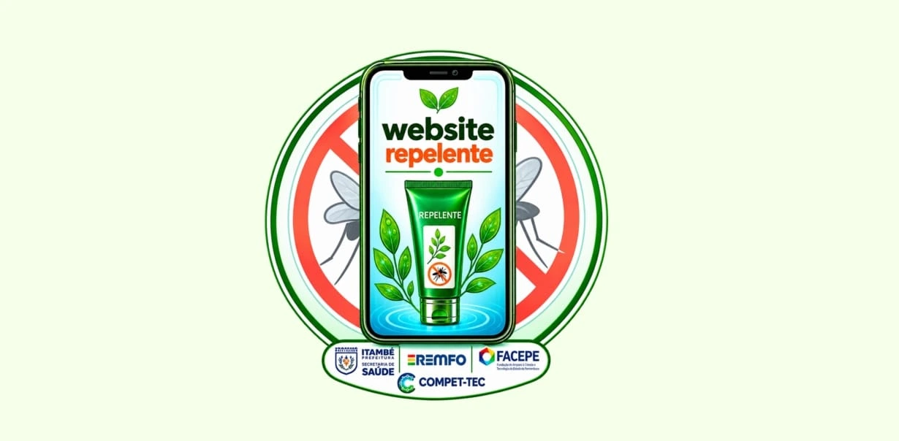
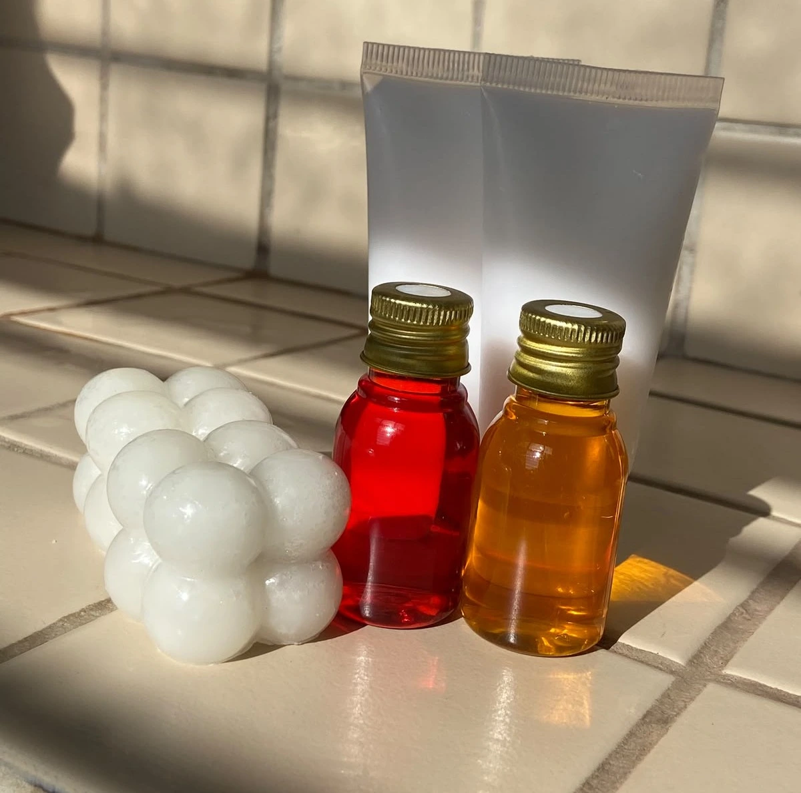

FACEPE
Fundação estadual de fomento à ciência e à tecnologia.
Aedes Lab
Itambé · PE
O Website Repelente é um projeto de caráter científico e socioambiental que busca contribuir para a prevenção das arboviroses transmitidas pelo mosquito Aedes aegypti, responsável pela disseminação de doenças como dengue, zika e chikungunya. Para isso, reúne o desenvolvimento de uma plataforma digital de coleta, organização e visualização de informações, a colaboração de profissionais da Vigilância em Saúde e a investigação de produtos botânicos relacionados à temática da prevenção.

1. Monitoramento e mapeamento de áreas de risco Desenvolvimento de uma plataforma digital destinada ao registro e à organização de informações sobre a presença de mosquitos em diferentes localidades. A proposta é facilitar a identificação de possíveis pontos críticos e contribuir para o acompanhamento dessas áreas, em colaboração com os agentes de endemias. Utilização de ferramentas digitais para aproximar informações, profissionais e população. Por meio da organização dos dados, buscamos oferecer um instrumento complementar às atividades de vigilância e contribuir para o planejamento de ações preventivas.
2. Investigação e produção de itens botânicos Desenvolvimento de produtos como hidratantes, difusores e velas, utilizando ingredientes de origem natural. Essa frente busca explorar possibilidades de aproveitamento de componentes vegetais e discutir suas aplicações, considerando critérios de segurança, pesquisa científica e sustentabilidade.

O Website Repelente é desenvolvido por estudantes da Escola de Referência em Ensino Médio Frei Orlando (EREM Frei Orlando), sob orientação docente e com a colaboração da Secretaria Municipal de Saúde de Itambé.
Fundação estadual de fomento à ciência e à tecnologia.
Órgão municipal responsável pela saúde pública e pelo controle de endemias.

Escola estadual de ensino médio em Itambé.
Programa estadual de extensão tecnológica para estudantes do ensino médio e técnico.